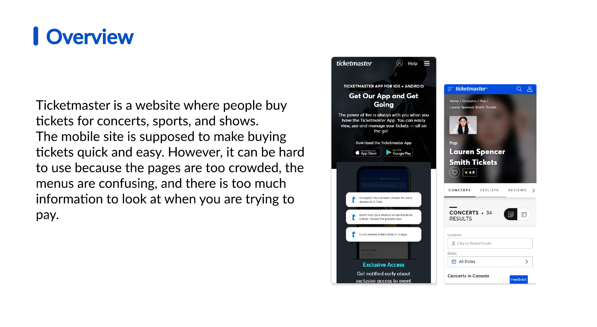
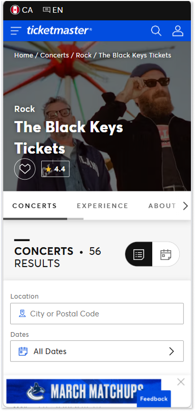
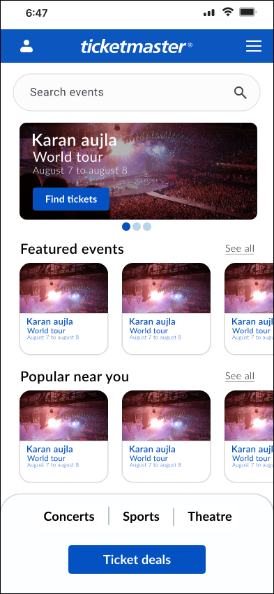
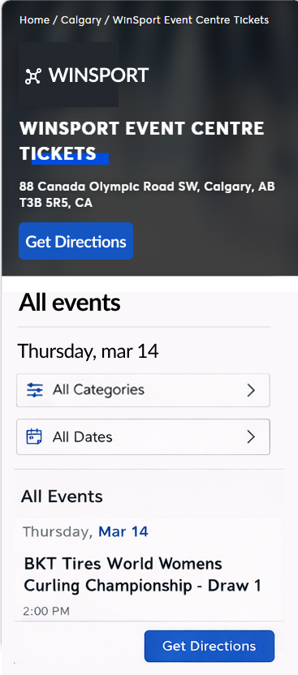
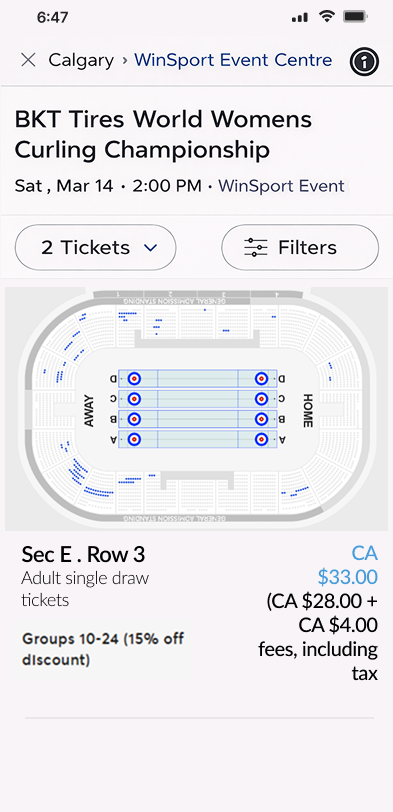
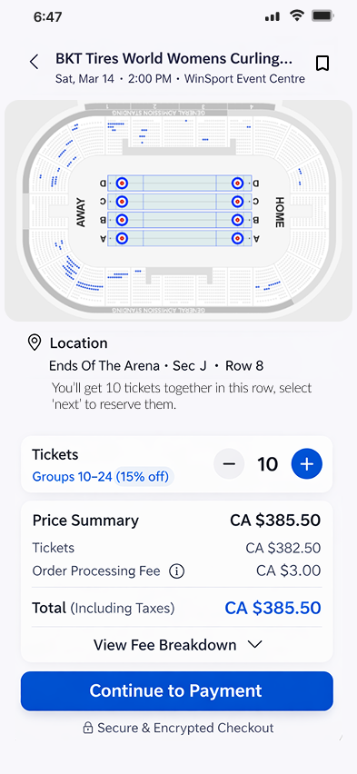
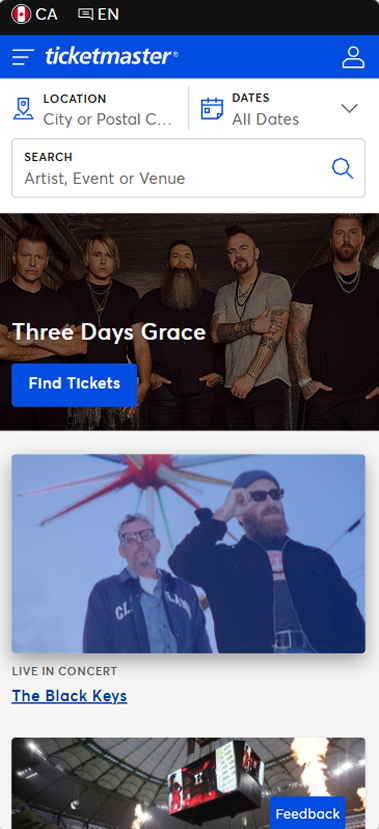
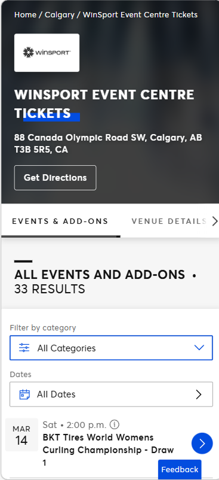
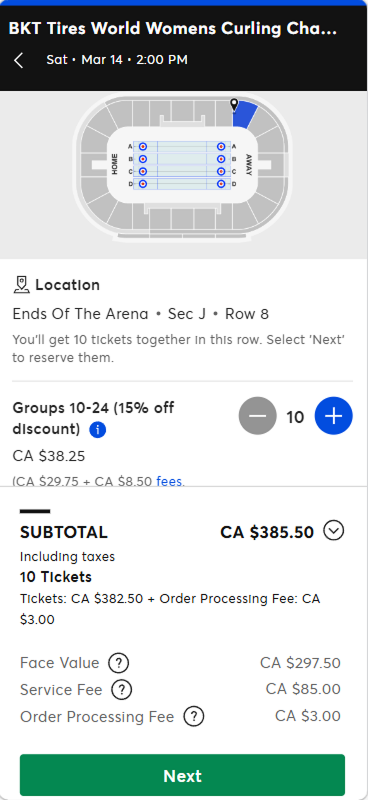

A full UX audit and redesign of Ticketmaster's mobile web experience simplifying event discovery, rebuilding the seat selection interface, and cutting checkout from 7 steps down to 3.
View Figma prototype


Ticketmaster is the dominant platform for live event ticketing yet its mobile web experience is one of the most friction-heavy flows in consumer apps. Cluttered navigation, an unintuitive seat map, and a 7-step checkout regularly cause users to abandon purchases at the worst possible moment. This project is a self-initiated, research-led redesign of those three core flows.
I started with a full end-to-end audit of the Ticketmaster mobile web experience from landing page through post-purchase confirmation. I then conducted 12 user interviews with people who regularly buy tickets online to map where the flow breaks down in practice.
User interviews revealed consistent friction across navigation, seat selection, and checkout. These insights directly informed the redesign decisions that follow.
With research findings as the brief, I mapped out simplified user flows for the three key journeys in FigJam before moving into low-fidelity wireframes. The goal was to validate structure and hierarchy before any visual design decisions were made.
Home — search-first layout

Event detail — progressive disclosure

Seat map — larger zones, inline pricing

Checkout collapsed to 3 steps
Since 83% of users went straight to search, the redesigned homepage makes the search bar the dominant element large, centred, immediately interactive. Category browsing moves to a secondary persistent tab, reducing visual noise while keeping discovery accessible.
The venue map was rebuilt with larger touch zones per section, reliable pinch-to-zoom, and inline zone pricing visible directly on the map without requiring a tap. This reduced the number of interactions needed to select seats by 4 touches in testing.
Delivery options and ticket protection are combined into a single "Order options" step. Fee disclosure moves to the event detail page rather than appearing in checkout. Account creation is optional — users check out as guests with a save-details prompt post-purchase.



Every design decision in this project was anchored directly to a user interview finding. That discipline refusing to change anything without a data point to back it made the rationale unusually clear and the scope easier to manage. When no data supported a change, I left it alone.